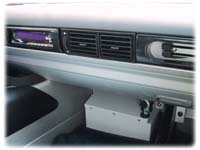
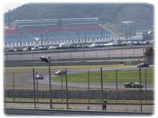
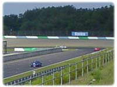
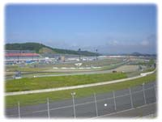
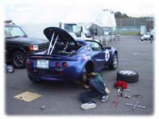
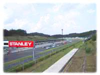
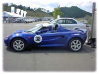
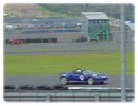
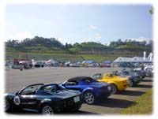

|
〜「ADVAN ELISE CUP 第３戦」の巻〜
|
|
| ２０００年８月５日〜２０００年８月６日 |
|

００／８／５（土）
この日までエリーゼが工場に入ってました。なんで、工場に入っていたかというとレースの為に改造していたんならいいんですが、軟弱なんでレースに出ているにも関わらず文明の利器、エアコンをオーダーして付けてもらっていたのでした。(^_^;)さすがにサーキット行くまでに暑さでダウンしそうなのでエアコンを付けても約１０ｋｇしか重くならないというので、０．１秒を争うぐらいになっていれば大問題ですが、まあ僕ぐらいの運転だったら大差ないでしょう。なんでもロータスはイギリスなので日本よりもすずしいのでエアコンなんて必要ないみたいです。今まで乗ってきた車はすべてエアコンが付いていたのでやっぱりないと欲しくなるもんです。前日朝まで飲んでいたので、夕方にお店に車を取りに行ったのですが、その時に前回のレースの時の写真が載っていましたねって言われて、お店で見せてもらったら「ＳｐｏｒｔｉｎｇＴＩＰＯ」にバッチリ載ってました。おもわず帰りに本屋さんに寄って買ってきました。(^^)いやー仕事と違って雑誌に載るのって良いもんですね。
００／８／６（日） 今日はレースなので朝４時起きで、ツインリンク茂木を目指して出発しました。朝から蒸し暑かったのでいやーやっぱりエアコン付けて良かったなーと思いながら約３時間半位でツインリンク茂木に到着しました。「もてぎチャンピオンカップレース」の中の一つとして「ＡＤＶＡＮ ＥＬＩＳＥ ＣＵＰ 第３戦」に出ました。招待選手を含めて全部で１４台のレース形式の走行会でした。今回は土屋圭市さんはこの日に富士スピードウェイで行われていた全日本ＧＴ選手権に出られていたので欠席でした。ちょっと残念です。 |
|    |
|
ツインリンク茂木のロードコースをフルコースでレースするんだと思っていたのですが、今回同じ開催でフォルクスワーゲン フェストがオーバルコースとロードコースの西コースでイベントをやっていたので、僕らはロードコースの東コース（３．４２２ｋｍ）でのレースでした。 前回の筑波サーキットと違って初めて走るサーキットだったので、予選はかなり緊張して挑みました。予選スタート時に左側のミラーがずれていたのでエリーゼは手動で直さないといけないのでシートベルトをはずして直してまた４点のシートベルトをつけてとやっていたらすでにみんな予選スタートしていなくなっていました。(^_^;)そして遅れること１周だと思うんだけど出発して走ったんですが、２周目の途中でバッテリーの警告ランプがついていたのですぐにピットに入ってお店のメカニックの人に見てもらったら、「オルタネーターが回っていませんね。」と言われ「でも残りの予選ぐらいでしたら大丈夫ですから走ってください。」と言われたので警告ランプ付きでもう一度コースに出ていきました。このオルタネーターというのはエンジンがかかっているとベルトで回してバッテリーを充電する物なので、バッテリーの残りだけで走らないといけない状態です。  走り始めたらやっぱり初めてのサーキットだったのでコーナーの進入速度やライン取りやそのコーナーを何速全開でいけるとか全然解らずに走ったので毎周回試行錯誤しながらの予選でした。それに、予選中に２台の車がスピンしてグラベル（コース外の砂利の部分）に止まっていたりしたので、より緊張しました。(^_^;)結局スタートが遅れたのとピットに入っていたのとで４周ぐらいしかタイムアタック出来ずに予選終了してしまいました。それでも、１’５２．２９７で１４台中１０位でした、トップはピストン西沢さんで、１’４３．９９７で、僕は約８秒遅れでした、もっと遅いかと思ったのですが２分近いコースで８秒だったのでちょっと良い感じでした。(^^)パドックに戻ってトラブルの原因を見てもらうと、オルタネーターに掛かっているはずのベルトが掛かっていないことが判明してベルトが切れたのかとエンジンルームを見てもらっていると、ピストン西沢さんが最終コーナーにベルトが落ちていたよって持ってきてくれました。ピストン西沢さんどうもありがとうございました。m(__)mベルトは切れていた訳じゃなくてエアコンを付けたときにベルトを取りつける部分が上手くついていなかったらしく取れたみたいです。(;_;)この場でなんとかベルトを取りつけてもらったのですが、東京に戻ってからもう一度工場に入れなくてはならないみたいです。もともと、付いていないエアコンを付けたとはいえよくないですよね。エアコンを付けているのはお店とは違ってどこかの専門店らしいのですが、かなり気分が悪くなってしまいました。予選と本選の間に時間があったので何とか仮に直してもらえましたが、きちっと直ってないので不安を抱えながらの本選になります。  いよいよ本選ですが、１０番手グリッドからのスタートで、フォーメーションラップの後もう一度グリッドに着いてグリーンシグナルでスタートしました。東コースなのでスタート直後がダウンヒルストレートで下りの直線の後１コーナーが９０°コーナーでしたのでかなり緊張しましたが今回はちょっとがんばってスタートとその後のコーナーの混乱で２台抜いて多分８番手ぐらいで走り始めることが出来ました。かなりサイドバイサイドだったので前回よりももっと緊張しました。その後の３周目でこの日の自己ベストの１’５０．５５４が出て少しコースにも慣れてきてもっとコーナースピードを上げようとしていた時に４周目の第４コーナーで１００Ｋｍ位はスピードが出ている時に右向きにスピンをして気分的には２回まわってコース上で止まりました。でも、きっと１回まわっただけだと思うけどそれぐらい長い時間に感じてしまいました。誰にもぶつからずにコース上の右側で止まったのでホッとしました。すぐにスタートしたんですが、その間に２台の車に抜かれてしまいました。その後はやはりちょっとびびっているのかさっきまでよりアクセルが踏めないのか、追いかけようと思っているのに、どんどん前の車が見えなくなっていきました。１０ラップ走ったのですがかなり長く感じられて何周走ってもまだ終わらないのかと思ってしまいました。結局そのままゴールしました。今回も少しですが観客の方がいたので緊張しました。 このツインリンク茂木の東コースは下りのダウンヒルストレートエンドでは時速約１８０ｋｍ出ていたのでそこからフルブレーキでコーナーへ進入していくのは毎周回かなり怖かったです。その後の右左右左とコーナーが続くので車の荷重が右左とぶれるので４つ目のコーナーはかなり車のコントロールが難しくレース中もこのコーナーでスピンをしてしまいました。見た目はそんなに難しそうではないのですが走ると車の挙動が振れるのでとっても難しかったです。あと、ファーストアンダーブリッジをくぐったあとの１３０Ｒを曲がるのが中々スピードを上げて曲がれませんでした。
 やはり初めて走るコースでレースと言うのは大変ですね。よく新人のＦ１ドライバーが初めてのサーキットを走る時にＴＶゲームでコースのラインドリ等を確認したりしてイメージトレーニングをすると聞いたことがあるのですがわかる気がします。 結果ですが、なぜか解りませんがピストン西沢さんが途中で止まられたので、僕は９位でした。１１１Ｓクラスでは今回は４位でした。レース中スピンしなければ前回と同じ様にトロフィが貰えたのにとすでに欲が出てきてしまった自分を見てちょっとおかしかったです。(^_^;)平均時速がトップの人で１１７Ｋｍ位出ていたみたいで僕が１０７Ｋｍ位だったので筑波サーキットよりも平均時速で１０ｋｍ〜２０ｋｍ位速いのでかなり高速サーキットだった事がわかりますね。その分気持ち良いところもありますがとっても怖かったです。  １周が２分くらいのコースを１０周走ったのでフォーメーションラップ等を含めると約３０分程車に乗っていたんですが、レースの時間が１４：００からだったので気温がとっても高い中、暑さと緊張感のなか走っていたので凄く汗をかいて終わってパドックに戻った時に頭がくらくらして倒れそうでした。脱水症状か日射病なのか解りませんが、かなり体調が悪くなってしまってダウンしてしまいました。ま、でもそう大げさでもないかも知れませんがかなり長い間テントのしたで椅子にすわったまま動けませんでした。その間ジュースを沢山飲んだのですが、いくらでも飲めたので自分でも不思議なくらいでした。さすがに帰りはかなり辛かったです。仕事ばかりしてないでもう少し運動して体を鍛えないとだめですね。(-_-;)東京に帰ってから明後日に車をお店に持っていって工場に入れました。しかし、このレースの前日まで工場に入っていたのにまた工場に行ってしまっていくら外車とはいえつらいですね。ポルシェもかなり工場に入ってることが多かったのでなれてはいるんですが今回みたいに工場のミスでまた工場に入れたのは初めてなのでやっぱり希少な車だから仕方ないんですかね。早く工場から戻ってきて欲しいです。  次回のレースは９月３日（日）に筑波サーキットで、「ロータスデイ」というイベントの中で第４戦が行われます。この日は１日中ロータスのレースやヒストリックカーのレースやデモラン等も行われるみたいですよ。
|